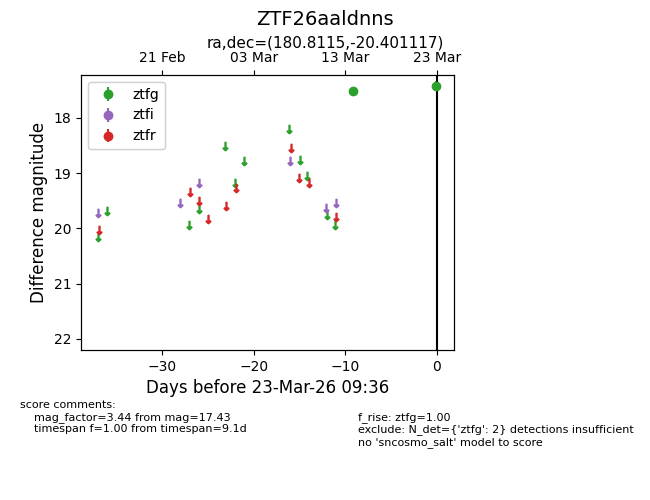
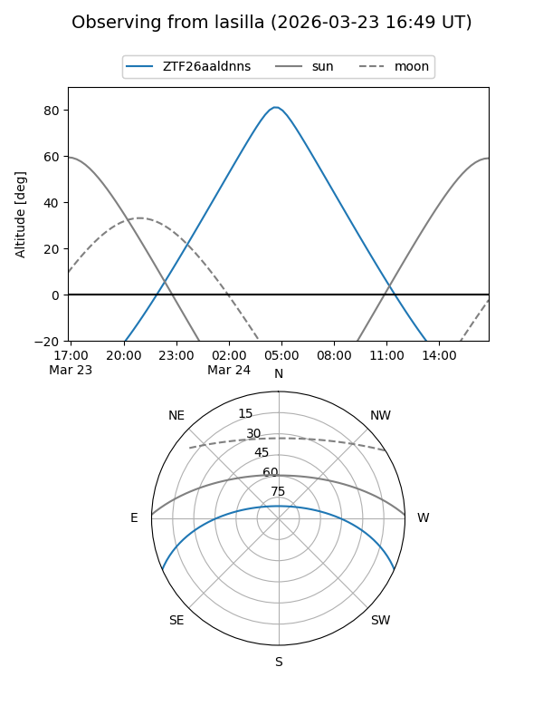
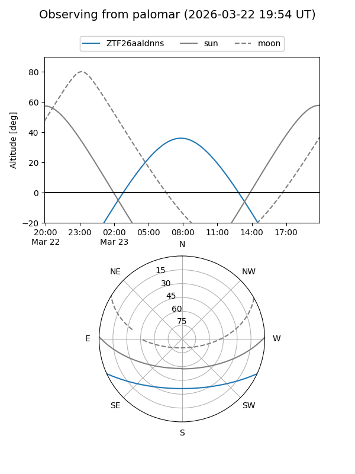

ZTF26aaldnns
Target ZTF26aaldnns at 2026-03-23 09:38
Aliases and brokers:
FINK: link
Lasair: link
ALeRCE: link
alt names
ZTF26aaldnns (ztf,fink_ztf)
Coordinates:
equatorial (ra, dec) = 180.8115,-20.40112
equatorial (HMS+DMS) = 12:03:14.77,-20:24:04.02
galactic (l, b) = (287.8942,+41.05919)
Flags:
Photometry:
last ztfg=17.43
2 ztfg detections
Lightcurve

Visibility


Additional plots